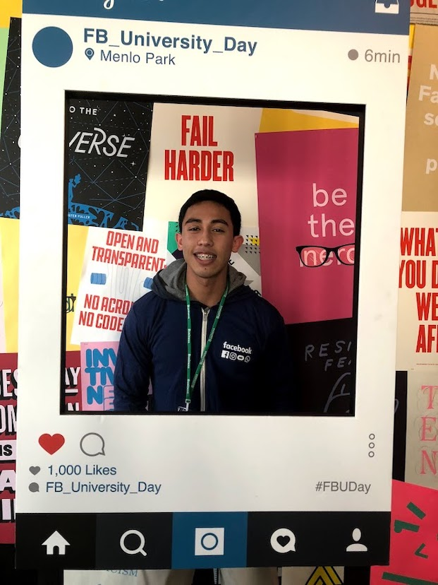
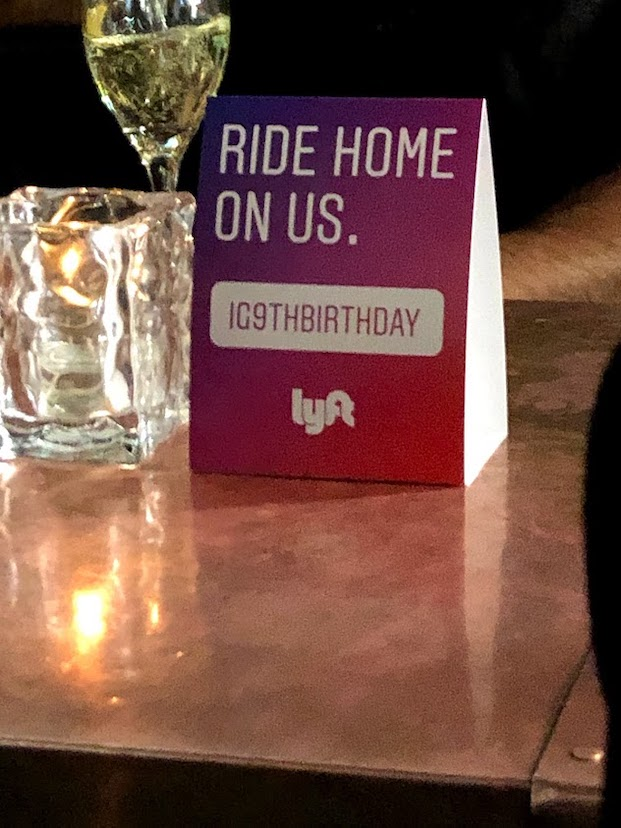
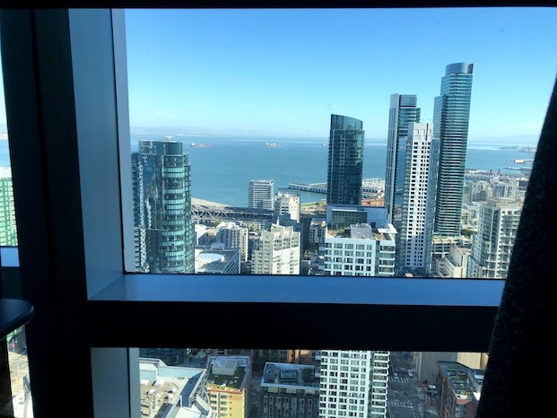

January 15, 2019
Table of Contents
Facebook is the largest social networking site in the world with over 2 billion users in more than 140 countries worldwide. Facebook is headquartered in Menlo Park, CA, and was founded in 2004 with the mission to give people the power to build community and bring the world closer together. In 2012, Facebook acquired Instagram, and in 2014, Facebook acquired both Whatsapp and Oculus VR. Instagram is also one of the largest social networking sites in the world; was launched in 2010; and has the mission to capture and share the world's moments.
In Fall 2019, I interned as a Software Engineer at Instagram in both San Francisco, CA and Menlo Park, CA. The internship lasted 12 weeks and there were thousands of interns just at the Menlo Park location, while I believe that I was the only intern at the San Francisco location. Facebook pays interns very competitively with other tech companies (e.g. LinkedIn, Google) and provided free housing to interns in a variety of locations within a given radius from the location they are interning at. Facebook is a pretty outstanding company to work for with over a dozen cafeterias throughout its MPK campus; multiple top-notch fitness centers (with a turf soccer field, full-size basketball court, and rock-climbing wall); and great perks/benefits. One of my favorite internships.
Unlike my previous internships where I just worked for one team, my internship at Instagram consisted of me working for two teams spanning both the San Francisco and Menlo Park locations. Over the course of twelve weeks, I interned as a backend Software Engineer for the Instagram Core Business team in San Francisco for the first half of my internship, and for the Instagram Data Security & Privacy Team in Menlo Park for the second half of my internship.
While working in San Francisco for the Instagram Core Business Team, I worked on a feature to display both active and expired apps and websites that users have used Instagram to log into. This was a challenging and exciting project to work on, in which I got to work with Facebook's Tao social graph database and Instagram's graph database by working with GraphQL (developed at Facebook) as well as Instagram's Graph APIThis project was a great experience for me as I got to work across two very large and very complicated databases in Facebook and Instagram, and learn and work on a number of cool technologies.
While working in Menlo Park for the Instagram Security & Data Privacy Team, I worked on several smaller projects with one involving working on the implementation of features for an Instagram ranking system to help better target and tailor ads to users. In addition, this involved building out the mobile configuration and landing pages, which was really cool as this was the first time that I worked on anything mobile-related.
There were a number of cool intern events throughout the course of the internship, and below is a list of some of the events:


Facebook is a top-notch company with competitive comensation and benefits, along with a large number of cafeterias and fitness centers, and many other perks. Below are some perks:
Facebook is headquartered in Facebook, CA, but there are offices all over the world (with other offices in San Francisco, Seattle, New York, etc.). The Facebook campus consists of over twenty buildings; over a dozen cafeterias; several fitness centers; and trams (or individual bikes) that take you across the campus. The San Francisco Instagram building is a high rise and is flanked by the Salesforce and Slack buildings. The SF building has several cafeterias that also serve breakfast, lunch, and dinner, as well as micro kitchens throughout.

This was my last internship unfortunately (if I could continue interning, I definitely would! Interning is the best!), but I thoroughly enjoyed interning at Facebook/Instagram. I had the privilege to get to work at both the San Francisco and Menlo Park offices and got to attend some exclusive Instagram events, as well as incredible intern events that made the internship all the better. The cafeterias and micro kitchens were amazing, and the campuses incredibly beautiful (i.e. MPK campus features a roof garden!). I recommend interning at Facebook as you get to feel what it is like to work for one of the biggest tech companies, and enjoy some of the nicest perks/benefits in Silicon Valley.